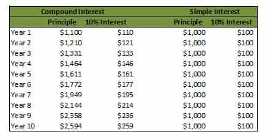
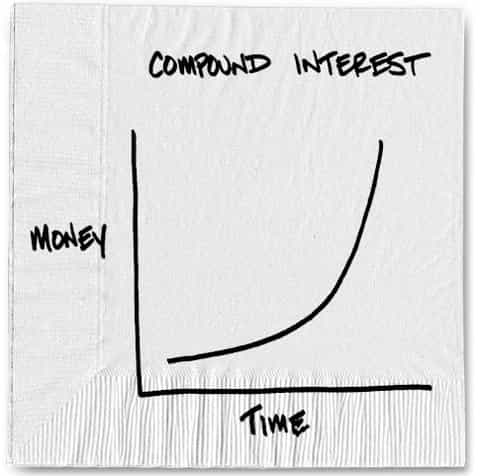
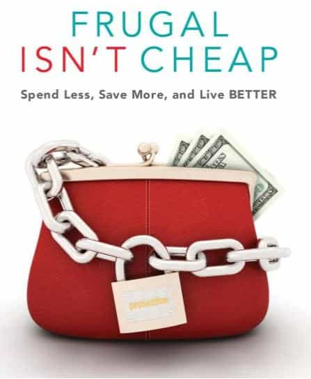
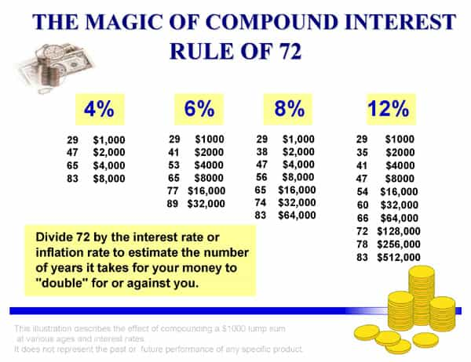

is an aspiring philosopher king, living the dream, travelling the world, hoarding FRNs and ignoring Americunts. He is a European at heart, lover of Latinas, and currently residing in the USA.


As late as 1970, almost half of all jobs had a pension—a guaranteed income you would receive upon retiring after working a certain number of years in your field. Combined with social security income, which is generally enough to provide basic housing and food needs, a man could retire quite comfortably, and without ever needing to know anything about investing. Times have changed, but I’m going to show you how, if you start early enough, you can become a millionaire by the age of retirement, even if you work at McDonalds.
When I entered high school, my father took me to the library, introduced me to some books on finance and investing, and a service our library had called Value Line, a series of large books published by an investment research firm which reported data on thousands of companies and mutual funds. Being good in math, and interested in statistics (particularly books on gambling and statistics—side note: blackjack is typically the best game to play at a casino—roulette is among the worst), I was fascinated with the idea that one could save their money, and it would grow in value.
Compound Interest is the repeated effect of earning interest, and then adding that interest to your savings, thereby earning a greater amount of interest the following year. As an example, imagine I loan you $1,000 at a 10% rate of interest. In a year you must return $1,000 principle plus $100 in interest to me, leaving me with $1,100. That is simple interest. But imagine I then invest my $1,100 in a retirement account that earns 10% each year. By the end of a decade, instead of $100, I will now be receiving $259 in interest. This is off the same $1,000 investment I started with.
In order for someone to earn as much as me in year 10, they would need almost $2,600 in savings, while I invested only $1,000, and that was a decade ago. I never added another penny of my own money to my account, and already you would need almost 3 times as much money in savings just to keep up with me.

The effects of compound interest are exponential, and as time increases, the end result of savings increases more rapidly with every year. If you remember no other concept, remember this. The longer the time period, the greater the money.

When I was 15 I began working at the local grocery store. I worked 5 hours a day after school, plus weekends, earning a bit less than $250 a week. Now, a 15-year-old has little need for thousands of dollars, so I saved the majority of this money. That year, I opened a retirement account with $2,000 (less than 10 weeks of work, which was easy), and still had plenty left over to spend.
IRA is gonna get you some money
You can use the basic concept of compound interest to make you money. But there are some extra things you can do to increase your returns even more. Most governments encourage saving for retirement, often with subsidized or tax-advantaged retirement accounts. The US Government offers Individual Retirement Accounts, which allow money to grow tax free. I recommend a specific type called a “Roth IRA” which we will discuss here.

If one lives frugally, it is easy to save enough to fund a sizable retirement account. I had a great professor who told me that the year after you graduate college, you will make more money than you have ever seen in your life. Perhaps you have a part time job earning $5,000 or $10,000, and you currently live on a fraction of that. But next year, you will be likely earning $30,000 or more. Most of you will spend $30,000, or close to it. But you could also choose to live off $10,000 as you have been doing, postpone making your big purchase of a car or whatever for just ONE year, and save as much of your income as you can.
If one lives frugally enough, one can easily save enough to fund a retirement account, even off minimum wage income. This is an extreme example, as practically no one works for minimum wage for more than a couple of years at the beginning of their career, but it goes to prove a point: there is NO excuse for not being wealthy later in life. Today someone earning minimum wage at 40 hours a week earns just over $15,000 a year. By saving 20% (only $60 of each $300 paycheck, or roughly an 1 hour a day), one can invest $3,000 in a retirement account.
Saving 20% of your income is not easy, but it IS possible. If one starts at age 20, and earns the historical rate of return of 8% in the stock market, how much money will one have at age 65? Take a guess. The answer: $1,159,517. Think about that the next time you look at a McDonalds employee.
But most of us already earn well over minimum wage. What happens if you invest the maximum allowed every year into your IRA (currently $5,500, and increases over time)? With the same 8% return, you end up with over $2.1 million at age 65. If you really don’t know how to live frugally, pick up a book on the subject. It’s quite easy to find extra money by cutting out bad habits.
When I first started investing, I bought the stock of the company I worked for (bad idea—they later went bankrupt leaving me nothing). I then tried mutual funds, which did better, but I was paying exorbitant amounts in management fees to Wall Street Managers who were not performing any better than other options. The answer many have turned to today is Index Funds, and the champion of this is John Vogle of Vanguard Funds, one of the largest investment firms in the world.
For over four decades, Vogle has been pushing the idea of getting Wall Street out of the equation, doing no trading, and simply owning a basket of American businesses by investing in an Index Fund (a group of hundreds of businesses). As Vogle puts it, “then you are creature of the market, not of a casino.”
These funds are much cheaper, because there is no active manager; they simply perform as the overall economy, or a defined sector of businesses, performs. The performance of these indexes as a whole is actually BETTER than managed mutual funds. One of the most popular funds in the world is the Vanguard Index 500, which mirrors the S&P 500 that is a mix of 500 of the largest and strongest companies in America. If you invest in this, when the news reports “The S&P Index was up 2% this month” they are talking about your return.

While there are many online calculators that can calculate projected returns for you, a simple way of gauging performance is by using the “Rule of 72.” It’s very simple. The rule tells you how long it will take for your money to double when invested at a compound rate. Simply divide 72 by the interest rate. The answer is the number of years for your money to double. 72 / 10% = 7.2 years. 72 / 5% = 14.4 years.
Unfortunately, this system doesn’t work nearly as well as it used to in the past, and we are in for more financial turmoil and changing of the way investing works in the years to come. Here are some risks:
Even with all these risks, you will be better off if you find a way to save for retirement, than if you don’t. Get ahead of the game, and give yourself financial freedom in the future.
In summary, if you are not saving for your retirement, you should start today. Educate yourself, make your own decisions, and don’t rely on any one source, including my advice here. Set up a monthly auto-pay where money is deducted every month into your retirement account, and get on the path to a stable financial future.
Nothing is guaranteed, but saving now will put you miles ahead of most others. One final bonus—retirement funds are excluded from many sizeable assets. They aren’t counted towards college tuition funds, and they can’t be taken by most creditors.
Read More: Expensive Woman Seeks Retarded Millionaire